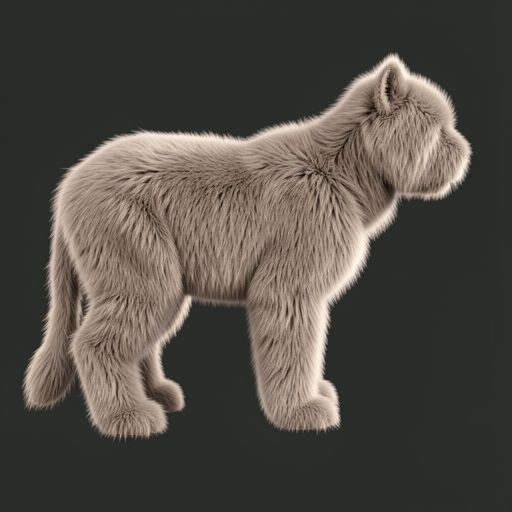
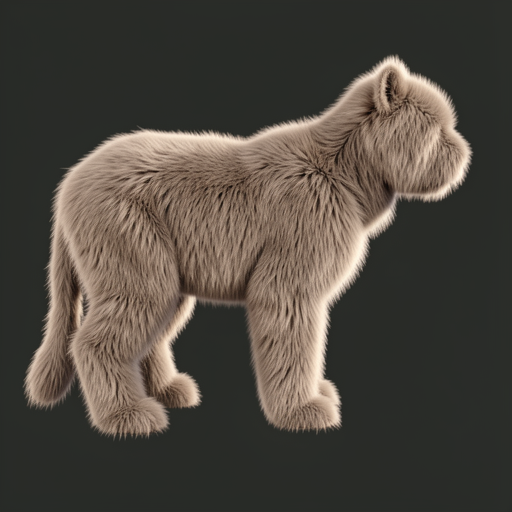
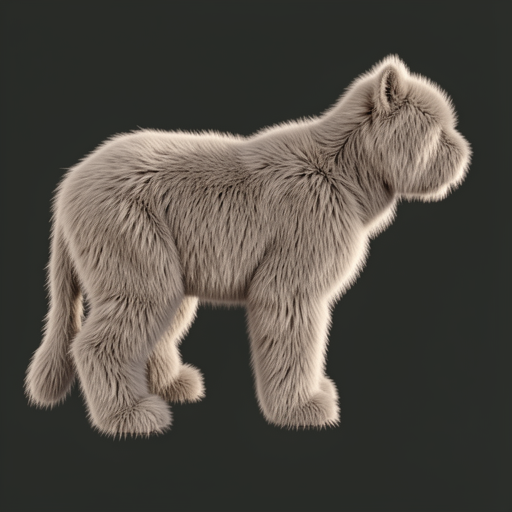
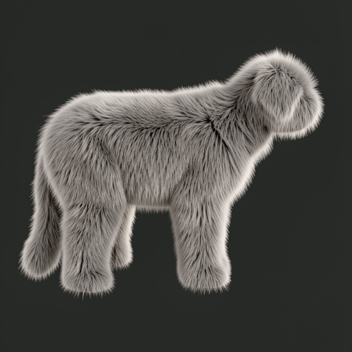

Authored envelope density pass
Where does FLUX preservation of an authored bauplan change nonlinearly as representation density and anatomical organization are independently degraded?
Prompt
No exclusion clause.
Frozen route
FLUX.2 Klein 9B · seed 80301 · 512×512 · 8 steps · guidance 1.0 · quantization 4. Every row changes only the authenticated source plate.

resolution-ladder/lod-00-r1.00.png

Positive control. Happy fur-bearing quadruped; authored mass, stance, neck, head, feet, and tail organization survive.
runs/r100-seed80301/output.png

resolution-ladder/lod-01-r0.75.png
No meaningful basin change. The generated organism is nearly identical to the positive control.
runs/r075-seed80301/output.png

resolution-ladder/lod-02-r0.50.png

Same organism basin and macro-organization. Only slight distal rear-support variation is visible.
runs/r050-seed80301/output.png

resolution-ladder/lod-03-r0.30.png

Still the same basin at 615 triangles. Local variation increases, but the authored macro-structure remains legible.
runs/r030-seed80301/output.png

resolution-ladder/lod-04-r0.15.png

First clear local breakdown. Cranial and distal support specificity collapse, although the global quadruped body plan survives.
runs/r015-seed80301/output.png
Audit note: five malformed launch attempts passed the source directory rather than an image and failed before inference. They remain recorded in density-pass-ledger.json with zero visual authority.